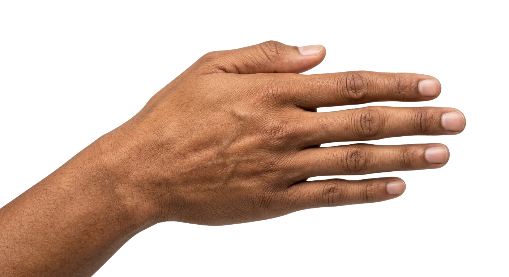
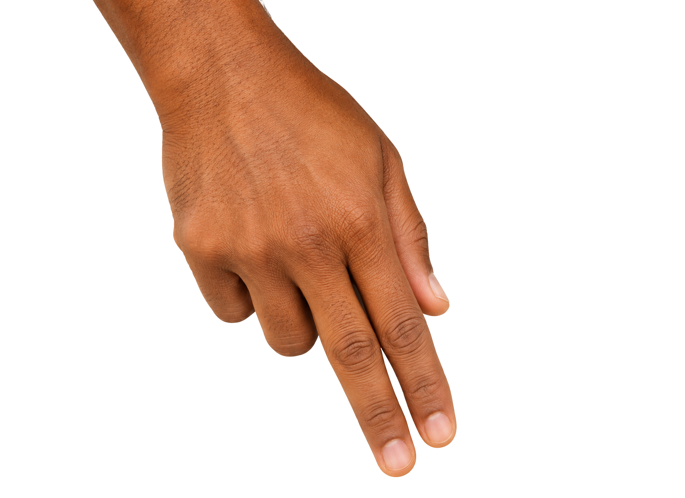

This workstation synthesizes plucked bass tones with the Web Audio API for ear training. Mobile browsers require one tap to unlock audio playback before any tone can sound.
RELATIVE 3-FRET PIVOT
The Ultimate Bass Fretboard Mastery Workstation
Interval training · solfa fluency · full-neck mapping
WORKSTATION MODE
SELECT TRAINING STRATEGY
STRATEGY D SETTINGS — STRING FOCUS
STRING FOCUS — SELECT ANY COMBINATION
Choose one or more strings. Natural Notes drills every semitone without locking the exercise to the master key.
STRATEGY E SETTINGS — TIMED ROOT HUNTER
20s
The target is the Song Key root. Tap every instance of it before the clock hits zero; tap a marker again to remove it. Score = accuracy × speed (finishing with time to spare scores higher; wrong taps cost 8 points each).
ORIENTATION ENGINE
Flip Fretboard (Upright Mode)
Toggle horizontal (lying flat) vs vertical (standing upright)
NECK CONFIGURATION
MASTER SONG KEY
NOTATION SYSTEM
UNISON GEOMETRY GUIDE
Tap any fret: arrows show the same pitch one string away (5 frets) and the octave (7 frets).
INTERLOCKING MODE SHAPES
Seven colour-coded puzzle pieces. The E & A strings of each box are pasted onto the D & G strings of the next.
"Unbox Me" Anti-Box Filter
Penalizes clustering all guesses in one 4-fret box
Audio Ear-Training Engine
Plays real recorded electric-bass samples on click
Loading recorded bass samples from the WebAudioFont CDN…
Hand Graphic Guide:HandWorks in every mode: Training, Groove Sandbox and Watch & Learn
20.0s
Generating your first challenge...
GENRE LOOP
TEMPO: 95 BPM
STEP EDITOR — click a step, then click a fret
TOPIC MENU — 27-LESSON AUTOPILOT CURRICULUM
AUTOPILOT SPEED: 1.0x
HAND GRAPHIC GUIDE
TRANSPORT


Active: —
TAB
1.0x
Persistence Dashboard
0
CURRENT DAILY WIN STREAK
0
ALL-TIME BEST STREAK
0
TOTAL CHALLENGES GRADED
GRADING HISTORY
No graded attempts yet. Submit a canvas to begin your history.